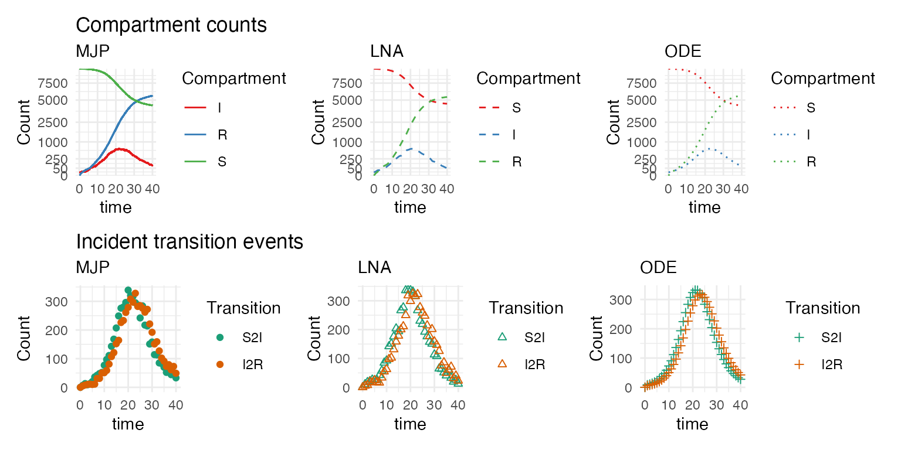

vignettes/stemr.Rmd
stemr.RmdThis vignette demonstrates the basic functionalities of the stemr package. Broadly, the package simulates and fits stochastic epidemic models to partially observed incidence and prevalence data, and implements the Bayesian data augmentation framework presented in Fintzi, Wakefield, and Minin (2020). Simulation can be conducted using ordinary differential equations (ODEs), Gillespie’s direct algorithm (Gillespie, 1976), and using a restarting version of the linear noise approximation (LNA; Fintzi et al., 2020). Inference is conducted using ODEs or the LNA. This vignette, in particular, demonstrates how to simulating partially observed incidence data from an outbreak with SIR dyanmics and fit an SIR model to the data via the linear noise approximation. This corresponds to the procedure used in the coverage simulation in Fintzi et al., (2020).
stemr packageTo install the stemr package, clone this repository and build the package from sources. Since stemr relies on compiled code, you . You should be able to rebuild in the usual way once you clone the package repo and install the other dependencies (odeintr, extraDistr, ggplot2, patchwork, Rcpp, RcppArmadillo, and BH).
As a basic example, we will simulate an outbreak with SIR dynamics and generate negative binomial incidence counts with a mean case detection rate of 0.5. Briefly, the SIR model describes the time-evolution of an outbreak homogeneously mixing population where each individual exists in one of three states - susceptible (S), infected (I), and recovered (R). Infection implies that an individual is infectious with no latent period, while recovery confers lifelong immunity. The waiting times between infection and recovery events are taken to be exponentially distributed and the rates of state transition change every time the population jumps to a different state. Hence, the transmission process is a Markov jump process. The rates at which infection and recovery events take place are \[\lambda_{SI} = \beta S I,\ \text{and}\ \lambda_{IR} = \mu I,\] where \(\beta\) is the per-contact rate of infection, \(\mu\) is the recovery rate, and \(S\) and \(I\) denote the numbers of susceptible and infectious individuals. The basic reproduction number under SIR dynamics is \(R_0 = \beta P/\mu\), where \(P=S+I+R\) is the population size.
We initialize parameters and instatiate the SIR model in the code block below. The functions in the stemr package are documented and can be accessed in the usual way, e.g., help(rate).
library(stemr)
library(patchwork)
library(ggplot2)
popsize = 1e4 # population size
true_pars =
c(R0 = 1.5, # basic reproduction number
mu_inv = 2, # infectious period duration = 2 days
rho = 0.5, # case detection rate
phi = 10) # negative binomial overdispersion
# initialize model compartments and rates
strata <- NULL # no strata
compartments <- c("S", "I", "R")
# rates initialized as a list of rate lists
rates <-
list(rate(rate = "beta * I", # individual level rate (unlumped)
from = "S", # source compartment
to = "I", # destination compartment
incidence = T), # compute incidence of S2I transitions, required for simulating incidence data
rate(rate = "mu", # individual level rate
from = "I", # source compartment
to = "R", # destination compartment
incidence = TRUE)) # compute incidence of I2R transitions (not required for simulating data)
# list used for simulation/inference for the initial state, initial counts fixed.
# state initializer a list of stem_initializer lists.
state_initializer <-
list(stem_initializer(
init_states = c(S = popsize-10, I = 10, R = 0), # must match compartment names
fixed = T)) # initial state fixed for simulation, we'll change this later
# set the parameter values - must be a named vector
parameters =
c(true_pars["R0"] / popsize / true_pars["mu_inv"], # R0 = beta * P / mu
1/true_pars["mu_inv"],
true_pars["rho"],
true_pars["phi"])
names(parameters) <- c("beta", "mu", "rho", "phi")
# declare the initial time to be constant
constants <- c(t0 = 0)
t0 <- 0; tmax <- 40
# compile the model
dynamics <-
stem_dynamics(
rates = rates,
tmax = tmax,
parameters = parameters,
state_initializer = state_initializer,
compartments = compartments,
constants = constants,
compile_ode = T, # compile ODE functions
compile_rates = T, # compile MJP functions for Gillespie simulation
compile_lna = T, # compile LNA functions
messages = F # don't print messages
)
# list of emission distribution lists (analogous to rate specification)
emissions <-
list(emission(meas_var = "S2I", # transition or compartment being measured (S->I transitions)
distribution = "negbinomial", # emission distribution
emission_params = c("phi", "S2I * rho"), # distribution pars, here overdispersion and mean
incidence = TRUE, # is the data incidence
obstimes = seq(1, tmax, by = 1))) # vector of observation times
# compile the measurement process
measurement_process <-
stem_measure(emissions = emissions,
dynamics = dynamics,
messages = F)
# put it all together into a stochastic epidemic model object
stem_object <-
make_stem(dynamics = dynamics,
measurement_process = measurement_process)Having compiled the model, we can simulate an outbreak and incidence (or prevalence) data using Gillespie’s direct algorith to simulate a MJP path, with the LNA, or deterministically with ODEs. Since we specified that the data should consist of incidence counts in instatiating the model, the simulation function will produce incidence data. The prevalence and incidence curves are plotted below.
sim_mjp <- simulate_stem(stem_object = stem_object, method = "gillespie", full_paths = T)
sim_lna <- simulate_stem(stem_object = stem_object, method = "lna", lna_method = "approx")
sim_ode <- simulate_stem(stem_object = stem_object, method = "ode")
We’ll keep the dataset simulated under the MJP (shown below) and fit an SIR model to the data.
ggplot2::ggplot(data = as.data.frame(sim_mjp$datasets[[1]]),
ggplot2::aes(x=time, y = S2I)) +
ggplot2::geom_point() +
ggplot2::theme_minimal() +
ggplot2::labs(x = "Week", y = "Count", title = "Observed Incidence")
We’ll need to recompile the measurement process with the simulated data fed to the data argument of the stem_measure function since the data was not present when the measurement process was originally compiled. There is no need to recompile the model dynamics object, although we’ll have to regenerate the object with the new measurement process.
measurement_process <-
stem_measure(emissions = emissions,
dynamics = dynamics,
data = sim_mjp$datasets[[1]])
stem_object <-
make_stem(dynamics = dynamics,
measurement_process = measurement_process)In order to perform inference, we’ll need to specify a function for transforming the model parameters from their natural scale to the estimation scale on which the MCMC explores the posterior, a function for transforming parameters on their estimation scale to the natural scale on which they enter the model dynamics and measurement process, and a function that returns the log prior. We’ll parameterize the MCMC estimation scale in terms of the log basic reproduction number, log recovery rate, logit mean case detection rate, and log of the negative binomial overdispersion parameter. The functions are specified as follows and placed into a list of functions (note that it is critical that the function signatures follow the specification given below):
### Parameterization in terms of log(R0) and log(mu)
## Priors for log(R0), log(mu), logit(rho), phi
# Parameters (natural scale): beta, mu, rho, phi
# Parameters (estimation scale): log(beta * N / mu), log(mu), logit(rho), log(phi)
# function to take params_nat and return params_est
to_estimation_scale = function(params_nat) {
c(log(params_nat[1] * popsize / params_nat[2] - 1), # (beta,mu,N) -> log(R0-1)
log(params_nat[2]), # mu -> log(mu)
logit(params_nat[3]), # rho -> logit(rho)
log(params_nat[4])) # phi -> log(phi)
}
# function to take params_est and return params_nat
from_estimation_scale = function(params_est) {
c(exp(log(exp(params_est[1])+1) + params_est[2] - log(popsize)), # (log(R0), log(mu), N) -> beta = exp(log(R0) + log(mu) - log(N))
exp(params_est[2]), # log(mu) -> mu
expit(params_est[3]), # logit(rho) -> rho
exp(params_est[4])) # log(phi) -> phi
}
# calculate the log prior density. note the jacobian for phi
logprior =
function(params_est) {
sum(dnorm(params_est[1], 0, 0.5, log = TRUE),
dnorm(params_est[2], -0.7, 0.35, log = TRUE),
dnorm(params_est[3], 0, 1, log = TRUE),
dexp(exp(params_est[4]), 0.1, log = TRUE) + params_est[4])
}
# return all three functions in a list
priors <- list(logprior = logprior,
to_estimation_scale = to_estimation_scale,
from_estimation_scale = from_estimation_scale)We now specify the MCMC transition kernel. The main building block in the MCMC kernel is a list of parameter block lists, each specified via a call to the parblock() function. In this simple example, we’ll update the model hyperparameters using a multivariate normal Metropolis-Hastings algorithm. We’ll tune the algorithm using a global adaptive scheme (algorithm 4 in Andrieu and Thoms). We’ll also initialize the parameters at random values, which is accomplished by specifying a function that adds noise to the parameters on their estimation scale.
par_initializer = function() {
priors$from_estimation_scale(priors$to_estimation_scale(parameters) +
rnorm(4, 0, 0.1))
}
# specify the kernel
mcmc_kern <-
mcmc_kernel(
parameter_blocks =
list(parblock(
pars_nat = c("beta", "mu", "rho", "phi"),
pars_est = c("log_R0", "log_mu", "logit_rho", "log_phi"),
priors = priors,
alg = "mvnmh",
sigma = diag(0.01, 4),
initializer = par_initializer,
control =
mvnmh_control(stop_adaptation = 2.5e2))),
lna_ess_control = lna_control(bracket_update_iter = 50))We now run the MCMC algorithm to fit the model via ODEs (for the sake of time in compiling the vignette). To perform inference with the LNA, simply change the method argument to method="lna".
res <-
fit_stem(stem_object = stem_object,
method = "ode",
mcmc_kern = mcmc_kern,
thinning_interval = 50,
iterations = 5e2)The fit_stem function fits the model and returns a list of MCMC samples and latent epidemic paths. These can be accessed as follows:
runtime = res$results$runtime
posterior = res$results$posterior # list with posterior objectsAndrieu, C., and Thoms, J.. “A tutorial on adaptive MCMC.” Statistics and Computing 18.4 (2008): 343-373.
Fintzi, J., Wakefield, J., & Minin, V. N. (2020). A linear noise approximation for stochastic epidemic models fit to partially observed incidence counts. arXiv preprint arXiv:2001.05099.
Gillespie, D. T. (1976). A general method for numerically simulating the stochastic time evolution of coupled chemical reactions. Journal of Computational Physics 22, 403–434.
Murray, I., Adams, R. P., and MacKay, D. J. C. (2010). Elliptical slice sampling. JMLR: W&CP 9, 541–548.